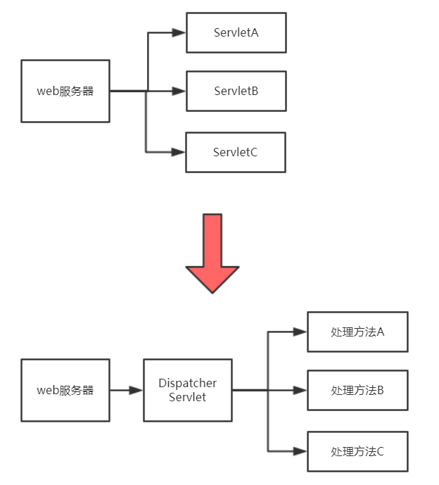

学习如何使用Spring，SpringMVC是很快的，但是在往后使用的过程中难免会想探究一下框架背后的原理是什么，本文将通过讲解如何手写一个简单版的springMVC框架，直接从代码上看框架中请求分发，控制反转和依赖注入是如何实现的。
建议配合示例源码阅读，github地址如下：
https://github.com/liuyj24/mini-spring
项目搭建可以参考github中的项目，先选好jar包管理工具，Maven和Gradle都行，本项目使用的是Gradle。
然后在项目下建两个模块，一个是framework，用于编写框架；另外一个是test，用于应用并测试框架（注意test模块要依赖framework模块）。
接着在framework模块下按照spring创建好beans，core，context，web等模块对应的包，完成后便可以进入框架的编写了。
在讲请求分发之前先来梳理一下整个web模型：
本项目的web服务器选择Tomcat，而且为了能让项目直接跑起来，选择了在项目中内嵌Tomcat，这样框架在做测试的时候就能像spring boot一样一键启动，方便测试。
既然选择了使用Java编写服务端程序，那就不得不提到Servlet接口了。为了规范服务器与Java程序之间的通信方式，Java官方制定了Servlet规范，服务端的Java应用程序必须实现该接口，把Java作为处理语言的服务器也必须要根据Servlet规范进行对接。
在还没有spring之前，人们是这么开发web程序的：一个业务逻辑对应一个Servlet，所以一个大项目中会有多个Servlet，这大量的Servlet会被配置到一个叫web.xml的配置文件中，当服务器运行的时候，tomcat会根据请求的uri到web.xml文件中寻找对应的Servlet业务类处理请求。
但是你想，每来一个请求就创建一个Servlet，而且一个Servlet实现类中我们通常只重写一个service方法，另外四个方法都只是给个空实现，这太浪费资源了。而且编起程序来创建很多Servlet还很难管理。能不能改进一下？
方法确实有：

从上图可以看到，我们原来是经过web服务器把请求分发到不同的Servlet；我们可以换个思路，让web服务器把请求都发送到一个Servlet，再由这个Servlet把请求按照uri分发给不同的方法进行处理。
这样一来，不管收到什么请求，web服务器都会分发到同一个Servlet（DispatcherServlet），避免了多个Servlet所带来的问题，有以下好处：
建议配合文章开头给出的源码进行参考
public class ClassScanner {
public static List<Class<?>> scanClass(String packageName) throws IOException, ClassNotFoundException {
//用于保存结果的容器
List<Class<?>> classList = new ArrayList<>();
//把文件名改为文件路径
String path = packageName.replace(".", "/");
//获取默认的类加载器
ClassLoader classLoader = Thread.currentThread().getContextClassLoader();
//通过文件路径获取该文件夹下所有资源的URL
Enumeration<URL> resources = classLoader.getResources(path);
int index = 0;//测试
while(resources.hasMoreElements()){
//拿到下一个资源
URL resource = resources.nextElement();
//先判断是否是jar包，因为默认.class文件会被打包为jar包
if(resource.getProtocol().contains("jar")){
//把URL强转为jar包链接
JarURLConnection jarURLConnection = (JarURLConnection)resource.openConnection();
//根据jar包获取jar包的路径名
String jarFilePath = jarURLConnection.getJarFile().getName();
//把jar包下所有的类添加的保存结果的容器中
classList.addAll(getClassFromJar(jarFilePath, path));
}else{//也有可能不是jar文件，先放下
//todo
}
}
return classList;
}
/**
* 获取jar包中所有路径符合的类文件
* @param jarFilePath
* @param path
* @return
*/
private static List<Class<?>> getClassFromJar(String jarFilePath, String path) throws IOException, ClassNotFoundException {
List<Class<?>> classes = new ArrayList<>();//保存结果的集合
JarFile jarFile = new JarFile(jarFilePath);//创建对应jar包的句柄
Enumeration<JarEntry> jarEntries = jarFile.entries();//拿到jar包中所有的文件
while(jarEntries.hasMoreElements()){
JarEntry jarEntry = jarEntries.nextElement();//拿到一个文件
String entryName = jarEntry.getName();//拿到文件名，大概是这样：com/shenghao/test/Test.class
if (entryName.startsWith(path) && entryName.endsWith(".class")){//判断是否是类文件
String classFullName = entryName.replace("/", ".")
.substring(0, entryName.length() - 6);
classes.add(Class.forName(classFullName));
}
}
return classes;
}
}public class MappingHandler {
private String uri;
private Method method;
private Class<?> controller;
private String[] args;
MappingHandler(String uri, Method method, Class<?> cls, String[] args){
this.uri = uri;
this.method = method;
this.controller = cls;
this.args = args;
}
public boolean handle(ServletRequest req, ServletResponse res) throws IllegalAccessException, InstantiationException, InvocationTargetException, IOException {
//拿到请求的uri
String requestUri = ((HttpServletRequest)req).getRequestURI();
if(!uri.equals(requestUri)){//如果和自身uri不同就跳过
return false;
}
Object[] parameters = new Object[args.length];
for(int i = 0; i < args.length; i++){
parameters[i] = req.getParameter(args[i]);
}
Object ctl = BeanFactory.getBean(controller);
Object response = method.invoke(ctl, parameters);
res.getWriter().println(response.toString());
return true;
}
}public class HandlerManager {
public static List<MappingHandler> mappingHandlerList = new ArrayList<>();
/**
* 处理类文件集合，挑出MappingHandler
* @param classList
*/
public static void resolveMappingHandler(List<Class<?>> classList){
for(Class<?> cls : classList){
if(cls.isAnnotationPresent(Controller.class)){//MappingHandler会在controller里面
parseHandlerFromController(cls);//继续从controller中分离出一个个MappingHandler
}
}
}
private static void parseHandlerFromController(Class<?> cls) {
//先获取该controller中所有的方法
Method[] methods = cls.getDeclaredMethods();
//从中挑选出被RequestMapping注解的方法进行封装
for(Method method : methods){
if(!method.isAnnotationPresent(RequestMapping.class)){
continue;
}
String uri = method.getDeclaredAnnotation(RequestMapping.class).value();//拿到RequestMapping定义的uri
List<String> paramNameList = new ArrayList<>();//保存方法参数的集合
for(Parameter parameter : method.getParameters()){
if(parameter.isAnnotationPresent(RequestParam.class)){//把有被RequestParam注解的参数添加入集合
paramNameList.add(parameter.getDeclaredAnnotation(RequestParam.class).value());
}
}
String[] params = paramNameList.toArray(new String[paramNameList.size()]);//把参数集合转为数组，用于反射
MappingHandler mappingHandler = new MappingHandler(uri, method, cls, params);//反射生成MappingHandler
mappingHandlerList.add(mappingHandler);//把mappingHandler装入集合中
}
}
}完成了请求分发功能后，进一步想这么一个问题：
假设现在处理一个请求需要创建A，B，C三个对象，而
A 有个字段 D
B 有个字段 D
C 有个字段 B
如果按照顺序创建ABC的话，
首先要创建一个D，然后创建一个A；
接着先创建一个D，然后创建一个B；
接着先创建一个D，然后创建一个B，才能创建出一个C
总共创建了一个A，两个B，一个C，三个D。
上述是我们编写程序的一方创建对象的方式，可以看到由于对象不能被重复引用，导致创建了大量重复对象。
为了解决这个问题，spring提出了bean这么个概念，你可以把一个bean理解为一个对象，但是他对比普通的对象有如下特点：
为了制作出上述的bean，我们得有个bean工厂，bean工厂的原理也很简单：在框架初始化的时候创建相关的bean（也可以在用到的时候创建），当需要使用bean的时候直接从工厂中拿。也就是我们把创建对象的权力交给框架，这就是控制反转
有了bean工厂后按顺序创建ABC的过程如下：
首先创建一个D，把D放入工厂，然后创建一个A，把A放入工厂；
接着从工厂拿出一个D，创建一个B，把B也放入工厂；
接着从工厂拿出一个B，创建一个C，把C也放入工厂；
总共创建了一个A，一个B，一个C，一个D
达到了对象重复利用的目的
至于创建出一个D，然后把D设置为A的一个字段这么个过程，叫做依赖注入
所以控制反转和依赖注入的概念其实很好理解，控制反转是一种思想，而依赖注入是控制反转的一种具体实现。
public class BeanFactory {
//保存Bean实例的映射集合
private static Map<Class<?>, Object> classToBean = new ConcurrentHashMap<>();
/**
* 根据class类型获取bean
* @param cls
* @return
*/
public static Object getBean(Class<?> cls){
return classToBean.get(cls);
}
/**
* 初始化bean工厂
* @param classList 需要一个.class文件集合
* @throws Exception
*/
public static void initBean(List<Class<?>> classList) throws Exception {
//先创建一个.class文件集合的副本
List<Class<?>> toCreate = new ArrayList<>(classList);
//循环创建bean实例
while(toCreate.size() != 0){
int remainSize = toCreate.size();//记录开始时集合大小，如果一轮结束后大小没有变证明有相互依赖
for(int i = 0; i < toCreate.size(); i++){//遍历创建bean，如果失败就先跳过，等下一轮再创建
if(finishCreate(toCreate.get(i))){
toCreate.remove(i);
}
}
if(toCreate.size() == remainSize){//有相互依赖的情况先抛出异常
throw new Exception("cycle dependency!");
}
}
}
private static boolean finishCreate(Class<?> cls) throws IllegalAccessException, InstantiationException {
//创建的bean实例仅包括Bean和Controller注释的类
if(!cls.isAnnotationPresent(Bean.class) && !cls.isAnnotationPresent(Controller.class)){
return true;
}
//先创建实例对象
Object bean = cls.newInstance();
//看看实例对象是否需要执行依赖注入，注入其他bean
for(Field field : cls.getDeclaredFields()){
if(field.isAnnotationPresent(AutoWired.class)){
Class<?> fieldType = field.getType();
Object reliantBean = BeanFactory.getBean(fieldType);
if(reliantBean == null){//如果要注入的bean还未被创建就先跳过
return false;
}
field.setAccessible(true);
field.set(bean, reliantBean);
}
}
classToBean.put(cls, bean);
return true;
}
}注：本文总结自慕课网同名课程。